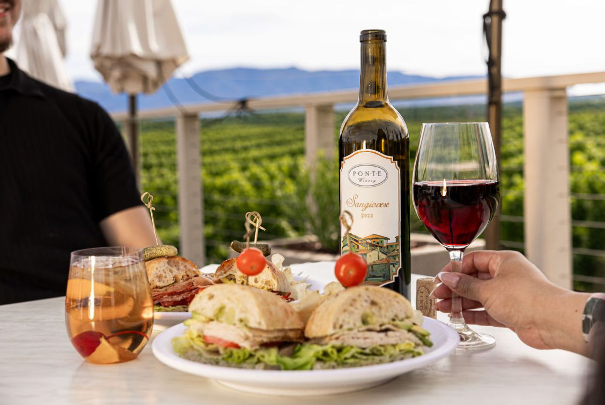
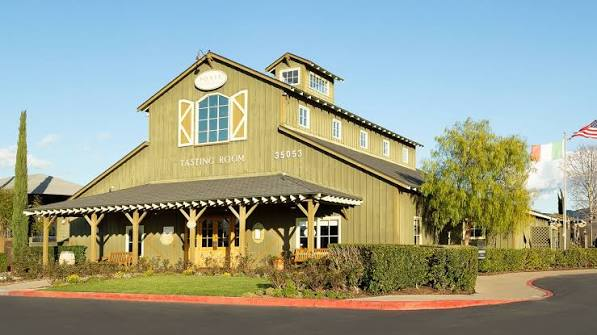
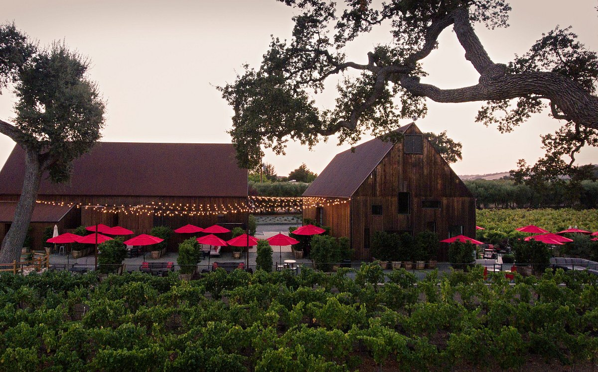
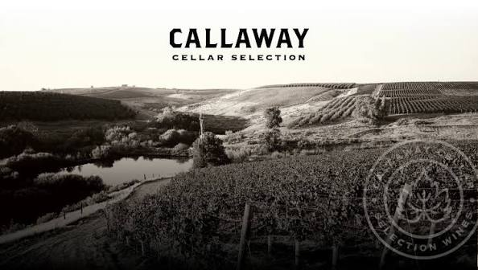
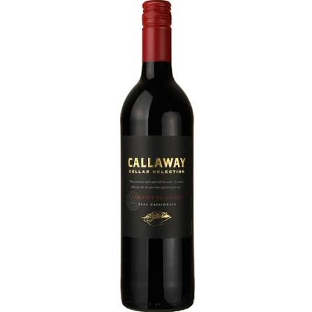

California Wineries
Josh Cellars

About Josh Cellars
Joseph Carr created Josh Cellars in 2007 as a tribute to his dad, Josh – Joseph’s way of honoring all that his father had done for him.
Josh was a lumberjack by trade who also served in the U.S. Army and volunteered as a local firefighter. He worked hard, and instilled values of dedication & perseverance in his children, Joseph and his twin sister, Lisa.
These values drove Joseph to create Josh Cellars. Hard work and a commitment to quality ensure that all Josh Cellars wines represent the best of California: they’re well-balanced, delicious and crafted to exacting standards.
Today, Josh Cellars has 11 varietals and a Reserve collection of wines that come from some of California’s most prestigious appellations, the North Coast and Paso Robles. Every vintage represents a labor of love, a commitment to quality, and a very personal promise to make great wine, in honor of Joseph’s father, Josh.
Visit Josh Cellars' WebsitePonte Winery

About Ponte Winery
Take your time discovering our estate-grown wines, one pour at a time. For $30 per person, you’ll choose six wines to taste and explore a range of varietals, styles, and vintages. Whether it’s your first visit or part of a long-standing tradition, each tasting offers the opportunity to discover a new favorite, learn more about our wines, and enjoy the experience along the way. No reservations required. Members and Guests will be accommodated on a first-come-first-served basis. Prices are subject to change.
Visit Ponte Winery's Website
Austin Hope

The Hope family has been farming in Paso Robles for more than 30 years. When they arrived in this barely-discovered region, they planted apples and grapes. Little did they know that the rolling, oak-studded terrain of Paso Robles would one day become a viticultural terroir of significance and one of the top winegrowing regions for quality red wine within the Central Coast.
Gone are the apple orchards. Today, the Hopes cultivate mature vineyards of the varieties best suited to their area including Cabernet Sauvignon, Syrah, Merlot, Mourvedre and Grenache. Vine density has increased and each vine is asked to produce very little fruit. The terroir of this domain expresses itself in its unique regional character. Regardless of the varieties planted, the expression of Paso Robles is displayed in the glass with spice, licorice and berry in the nose, soft textures and silky tannins on the palate.
Hope Family Wines consists of six individual brands: Liberty School, Treana, Quest, Austin Hope, Troublemaker, and Austin.
Visit Hope Family Wines WebsiteCallaway Cellars

About Callaway Cellars
In 1973, Ely Callaway, a successful textile entrepreneur, planted vineyards on 140 acres of land in Temecula, California. The first vintage of Callaway wine was produced two years later, and quickly gained renown after Queen Elizabeth II was served Callaway Riesling and in response, awarded Temecula recognition as an official winemaking region. 1982 brought Callaway another opportunity, when he purchased half of golf company Hickory Stick USA, later purchasing the company in full, and rebranding it as Callaway Golf.
Visit Callaway Cellars' Website